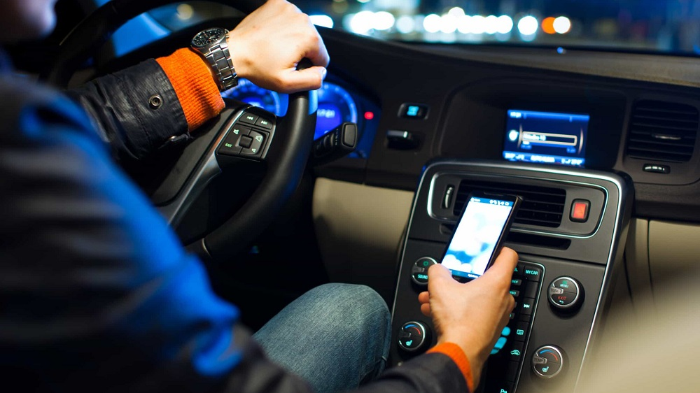
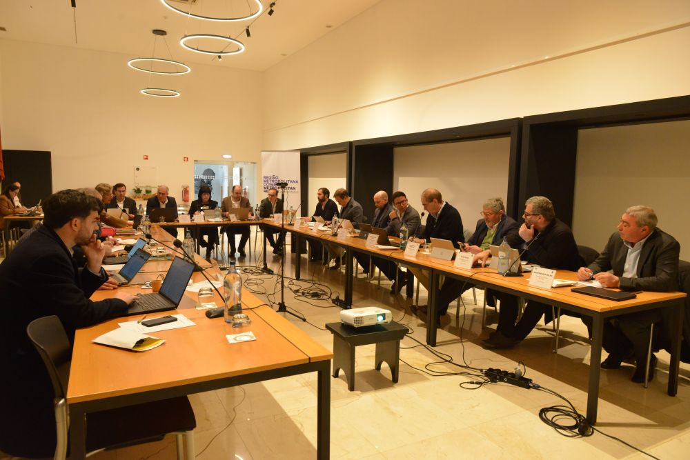

Últimas Notícias

Mortes nas estradas sobem 31% em 2026
Os acidentes rodoviários já provocaram 60 mortos em Portugal nos primeiros 39 dias de 2026 — mais 14 do que no mesmo período de 2025. O Porto foi o distrito com mais acidentes, com mais de 3.000 ocorrências registadas.

38 mortos nas estradas no período festivo
Entre 18 de dezembro de 2025 e 4 de janeiro de 2026, registaram-se 6.083 acidentes e 38 mortos nas estradas portuguesas. Mais de metade das vítimas perderam a vida em despistes.

GNR detém 806 condutores por álcool no Ano Novo
A GNR fiscalizou 63.904 condutores durante a operação de Ano Novo e registou 8.026 infrações. As mais frequentes foram excesso de velocidade, falta de inspeção periódica e uso do telemóvel ao volante.

PSP regista 4 mortos e 727 acidentes na operação de Ano Novo
A PSP contabilizou 219 detenções por crimes rodoviários, 120 das quais por condução sob o efeito do álcool. Foram ainda aplicadas 328 coimas por excesso de velocidade durante o período festivo.

Mau tempo encerra vias rodoviárias nos Açores
As condições meteorológicas adversas obrigaram ao encerramento de duas vias rodoviárias em São Roque do Pico. As autoridades pediram aos condutores para evitarem deslocações desnecessárias na ilha.